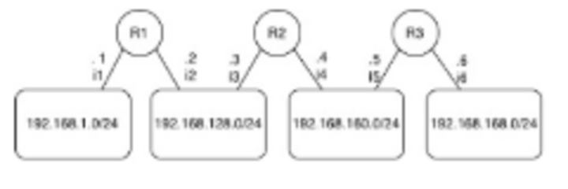
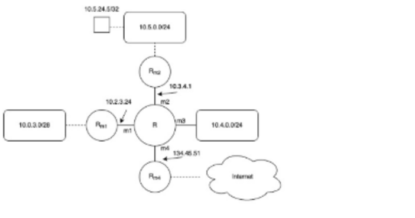
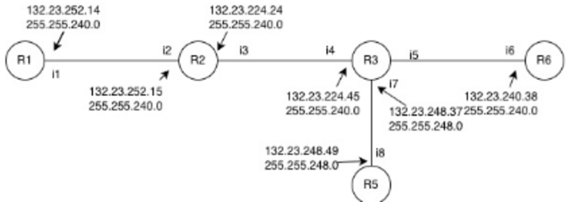
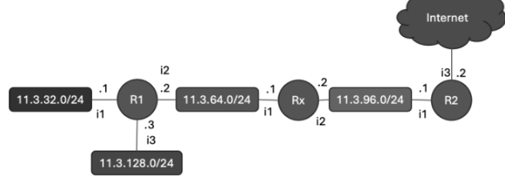

ECE422 — MIDTERM 2 PREP
IP addresses · Subnetting (single / multiple masks, groups, embedded) · CIDR · Forwarding tables · IP header, MTU, fragmentation
Name: ______________________________Date: ____________Score: ______ / 30
Lessons from Midterm 1 (multiple choice, scrap work required):
- Convert units before dividing (mW vs µW lost Q3). Add the whole carry back (it can be "10") (lost Q6). Re-check the circled letter against your scrap work (Q4: scrap said D, circled a).
- Concept questions ask for differences, advantages and disadvantages. Pick the option that matches the slide's own wording.
- "None of the above" is a real option: compute first, then look at the choices.
Part I — Methods (how the professor solves them)
1. Address basics
- IPv4 = 32 bits = network (prefix) + host. Mask /n = n ones. 255.255.224.0 → third byte 224 = 1110 0000 → /16+3 = /19.
- # addresses = 232−n. Usable hosts = 232−n − 2 (first = network address, last = broadcast).
- Network address = host AND mask (zero the host bits). Last address = set host bits to 1. A network address (host bits all 0) cannot be a destination for a host.
- Block size in the "interesting" byte = 256 / (2bits of mask in that byte)… easier: /19 → 2(24−19) = 32 in the 3rd byte; /27 → 2(32−27) = 32 in the 4th byte. Network starts at a multiple of the block size.
- Classes (first byte): A 0–127 (0…), B 128–191 (10…), C 192–223 (110…), D 224–239 multicast, E 240–255. Of 232 addresses: A = ½ (231), B = ¼ (230), C = ⅛ (229).
- Private blocks: 10.0.0.0/8 (A) · 172.16.0.0 – 172.31.255.255 = 172.16.0.0/12 (B) · 192.168.0.0/16 (C).
HW5 Q1 — address range
Question: What is the address range of network 145.144.0.0/12?
Solution:- /12 = all 8 bits of byte 1 + the first 4 bits of byte 2 are the network part.
- Byte 2 in binary: 144 = 1001 0000. Keep 1001, the last 4 bits are host bits.
- Smallest: host bits all 0 → 1001 0000 = 144. Largest: host bits all 1 → 1001 1111 = 159. Bytes 3 and 4 go from 0 to 255.
Answer: 145.144.0.0 to 145.159.255.255
HW5 Q2 — network address from a host and a mask
Question: What is the network address and the address range of a network with mask 255.255.224.0 and a host with address 131.14.12.3?
Solution:- Mask byte 3: 224 = 1110 0000 → 3 ones → prefix = 16 + 3 = /19.
- Network = host AND mask. Byte 3: 12 AND 224 = 0000 1100 AND 1110 0000 = 0000 0000 = 0. Byte 4 → 0.
- Block size in byte 3 = 224−19 = 32 → last address: byte 3 = 0 + 31 = 31, byte 4 = 255.
Answer: Network 131.14.0.0/19, range 131.14.0.0 to 131.14.31.255
2. Subnetting
- Feasibility test first: total addresses needed (rounded up to powers of 2) ≤ addresses in the leased block.
- Single mask, multiple subnets: bits for each subnet = log2(addresses per subnet) → new mask; the bits between the old and new mask are the subnet ID.
- k-th subnet = subnet ID (k−1) written in binary in those bits.
- Total hosts after splitting /20 into /27: 27 subnets × (25 − 2) = 128 × 30 = 3840.
- Multiple masks (variable size): round each request up to a power of 2, assign the largest first, each subnet starts at a multiple of its own size. Leftover = reserve.
- Groups of subnets (ISP): first give each group one block (customers × size), then split each group's block per customer.
- Embedded subnets: a subnet inside a bigger one (multiple masks, multiple subnets), e.g. a /26 split into a /27 + two /28.
HW5 Q4 — single mask, multiple subnets
Question: Assign the addresses of each subnet (3 subnets of 32 addresses each, as in the diagram), assuming that you lease network address 194.23.56.128/25. Indicate the addresses that can be used by hosts for each subnet.
Solution:- Feasibility test: /25 gives 27 = 128 addresses; needed 3 × 32 = 96 ≤ 128 → feasible.
- 32 addresses = 25 → 5 host bits → mask /27.
- Last byte of the lease: 128 = 1 00 0 0000 → the 2 bold bits are the subnet ID: 00 → 128, 01 → 160, 10 → 192, 11 → 224 (spare).
- Hosts in each subnet: first address = network, last = broadcast, the rest are hosts.
Answer: Subnets 194.23.56.128/27, 194.23.56.160/27, 194.23.56.192/27. Hosts: .129–.158, .161–.190, .193–.222
HW5 Q5 — the k-th subnet
Question: Assume you lease network address 128.17.144.0/22, and that you divide the network into subnets with 32 addresses. Indicate the address of the 20th subnet (starting from the smallest address number) and its range of addresses.
Solution:- 32 addresses → 5 host bits → /27. Subnet bits = 27 − 22 = 5 → 25 = 32 subnets.
- Bytes 3 and 4 of the lease: 1001 00SS.SSS0 0000 (S = subnet bits).
- The 1st subnet has ID 0, so the 20th has ID 19 = 10011.
- Put 10 011 into the S bits: 1001 0010.0110 0000 = 146.96. Range: 96 + 31 = 127.
Answer: 128.17.146.96/27, range 128.17.146.96 to 128.17.146.127
Example 5.33 — multiple masks (different sizes)
Question: An organization is granted the block 14.24.74.0/24. It needs 3 sub-blocks: one of 120 addresses, one of 60 addresses and one of 10 addresses. Design the sub-blocks.
Solution:- Block size: 232−24 = 256 addresses (14.24.74.0 – 14.24.74.255).
- Round each request up to a power of 2: 120 → 128 (/25), 60 → 64 (/26), 10 → 16 (/28).
- Assign the largest first; each sub-block starts at a multiple of its size.
- Count what is left: 128 + 64 + 16 = 208 used → 256 − 208 = 48 left in reserve.
Answer: a. 14.24.74.0/25 (to .127) · b. 14.24.74.128/26 (to .191) · c. 14.24.74.192/28 (to .207) · d. 208 @s used, 48 @s left in reserve: first 14.24.74.209, last 14.24.74.255
Example 5.34 — embedded subnets (Central, East, West)
Question: A company has three offices: Central, East and West, connected by private WAN lines. It is granted 64 addresses starting at 70.12.100.128/26. Management gives 32 addresses to Central and divides the rest between East and West.
Solution:- /26 = 64 addresses (70.12.100.128 – 70.12.100.191).
- Central: 32 = 25 → /27 → first block 70.12.100.128/27 (.128 – .159).
- The remaining 32 (.160 – .191) are split in two: 16 each = 24 → /28 → East .160 – .175, West .176 – .191.
- The routers use some addresses of each block; the last address of each block is reserved. The point-to-point WAN links use no addresses.
Answer: Central: 70.12.100.128/27 to 70.12.100.159/27 · East: 70.12.100.160/28 to 70.12.100.175/28 · West: 70.12.100.176/28 to 70.12.100.191/28 (the slide shows West as .160/28 to .175/28 again — typo: East and West cannot share addresses; 32 + 16 + 16 = 64 fills the /26 up to .191)
Example 5.35 — groups of subnets (ISP)
Question: An ISP is granted 190.100.0.0/16 (65,536 addresses). It distributes them to three groups: group 1 has 64 customers needing about 256 addresses each; group 2 has 128 customers needing about 128 each; group 3 has 128 customers needing about 64 each. Design the sub-blocks and find how many addresses are still available.
Solution:- Step 1, one block per group (customers × size): G1 = 64 × 256 = 16,384 = 214 → /18; G2 = 128 × 128 = 16,384 → /18; G3 = 128 × 64 = 8,192 = 213 → /19.
- Place them consecutively from the start: G1 190.100.0.0/18 (0.0 – 63.255), G2 190.100.64.0/18 (64.0 – 127.255), G3 190.100.128.0/19 (128.0 – 159.255).
- Step 2, inside each group: 256 → /24 per customer, 128 → /25, 64 → /26.
- Left = 65,536 − 16,384 − 16,384 − 8,192 = 24,576, starting right after G3.
Answer: G1: 190.100.0.0/18 (each /24) · G2: 190.100.64.0/18 (each /25) · G3: 190.100.128.0/19 (each /26) · 24,576 addresses left from 190.100.160.0
3. CIDR (supernetting)
- Write the bytes that differ in binary, keep the common leading bits, count them → prefix length; zero the rest → CIDR address.
- Why: fewer forwarding-table entries (aggregate routes) + better address-assignment efficiency than classes A/B/C. Class C for 2 hosts: 2/255 = 0.78%; class B for 256 hosts: 256/65,535 = 0.39%.
- Slide example: 192.4.16 … 192.4.31 share 20 bits → 192.4.16.0/20.
HW5 Q3 — CIDR of three networks
Question: What is the CIDR address of networks 18.198.34.192/30, 18.198.34.240/30 and 18.198.33.252/30?
Solution:- Bytes 1 and 2 are the same (18.198), so look at byte 3.
- 34 = 0010 0010, 33 = 0010 0001 → the first 6 bits (001000) are common.
- Prefix = 16 + 6 = 22; zero all later bits: 0010 0000 = 32.
Answer: 18.198.32.0/22 (professor: "bit 23 … is different, so the new mask is /23. The new CIDR address is then 18.198.32.0/22")
Jeopardy Q9 — CIDR of three hosts
Question: CIDR(193.221.231.43, 193.221.233.44, 193.221.234.45)?
Solution:- Bytes 1 and 2 are the same; look at byte 3.
- 231 = 1110 0111, 233 = 1110 1001, 234 = 1110 1010 → common: 1110 (4 bits).
- Prefix = 16 + 4 = /20; zero the rest: 1110 0000 = 224.
Answer: A: 192.221.224.0/20 (professor's answer)
4. Forwarding
- Algorithm: destination on one of my networks → deliver directly on that interface; else in my table → send to NextHop; else → default router.
- Test an entry: D AND mask = DST? If several entries match, the longest prefix wins (171.69.10.5 matches 171.69/16 and 171.69.10/24 → /24).
- Table format (HW6): DST | Mask | Next Hop | Interface. Directly connected → Next Hop "–". Next hop = neighbour router's IP on the shared network. Default route = 0.0.0.0 /0. Sort longest prefix first; /32 = one host.
- Routing table (built by routing protocols): costs, several options per destination. Forwarding table (used per packet): no cost, one option (next hop + interface).
- Datagram network: each packet carries the full destination address and is forwarded independently (may take different paths, survives failures).
HW6 Q1 — forwarding table of R1
Question: Write the forwarding tables for R1, R2 and R3 in a generic way (including all destinations). R1 connects 192.168.1.0/24 (i1) and 192.168.128.0/24 (i2); R2 (.3 on i3) connects 192.168.128.0/24 and 192.168.160.0/24; R3 connects 192.168.160.0/24 and 192.168.168.0/24.

Solution:- Directly connected networks of R1: 192.168.1.0/24 on i1 and 192.168.128.0/24 on i2 → Next Hop "–".
- All other networks (160.0 and 168.0) are reached through R2 → Next Hop = R2's address on the shared network: 192.168.128.3, interface i2.
- They all go the same way, so one default entry 0.0.0.0/0 replaces them.
Answer: 192.168.1.0 /24 – i1
192.168.128.0 /24 – i2
0.0.0.0 /0 192.168.128.3 i2
"The last entry; default router, saves us from adding two network destinations."
HW6 Q2 — forwarding table of router R
Question: Write the forwarding table of router R in the network diagram below.

Solution:- Directly connected network with a known mask: 10.4.0.0/24 on m3 → Next Hop "–".
- Networks behind Rm1: 10.0.3.0/28 → Next Hop = Rm1's address 10.2.3.24, interface m1.
- Networks behind Rm2: 10.5.0.0/24 and the single host 10.5.24.5/32 → Next Hop 10.3.4.1, m2.
- Internet behind Rm4 → default 0.0.0.0/0 → 134.45.51.x, m4.
- Sort from the longest prefix to the shortest: /32, /28, /24, /0.
Answer (professor's table):10.5.24.5 /32 (host) 10.3.4.1 m2
10.0.3.0 /28 10.2.3.24 m1
10.5.0.0 /24 10.3.4.1 m2
10.4.0.0 /24 – m3
0.0.0.0 /0 134.45.51.x m4
"We don't have the mask of the directly connected segments, so we will skip them … We would need to add the networks of router's interfaces that are directly connected: 10.2.3.24, 10.3.4.1, and 134.45.51.x, but we need more information."
5. IP header, MTU, fragmentation
| Field | Bits | Meaning |
|---|
| Version | 4 | 4 for IPv4 |
| Hlen | 4 | header length in 32-bit words (default 5 = 20 B) |
| TOS | 8 | type of service |
| Length | 16 | total bytes of the datagram (header + data), max 65,535 |
| Ident | 16 | same in all fragments of one datagram |
| Flags | 3 | 0 (reserved), DF = do not fragment, MF = more fragments |
| Offset | 13 | position of the fragment's data, in 8-byte units |
| TTL | 8 | hop limit, −1 per router, dropped at 0 |
| Protocol | 8 | demux key: TCP = 6, UDP = 17 |
| Checksum | 16 | of the header only |
| Src / Dst addr | 32 + 32 | IP addresses |
| Options | var. | e.g. source route, record route |
Default header: 12 fields, 20 bytes. IP service = connectionless, best effort (loss, reorder, duplicates, delay).
Jeopardy Q5 — fragment offset
Question: MTU = 61 B, TL (IP header) = 100 B. Fragment offset of the 2nd fragment?
Solution:- Data in the datagram = TL − header = 100 − 20 = 80 B.
- Data per fragment = MTU − 20 = 41 B → round down to a multiple of 8 → 40 B.
- Fragment 1 carries data bytes 0–39 (offset 0, MF = 1); fragment 2 carries bytes 40–79.
- Offset is counted in 8-byte units: 40 / 8 = 5.
Answer: Fragment offset = 5
Example — 3 fragments
Question: A datagram of TL = 4000 B (20 B header) is sent over a network with MTU = 1500 B. Give the length, offset and MF of each fragment.
Solution:- Data = 4000 − 20 = 3980 B.
- Data per fragment = 1500 − 20 = 1480 B (1480 / 8 = 185 ✓ multiple of 8).
- 3980 = 1480 + 1480 + 1020 → 3 fragments.
- Offsets: 0, 1480/8 = 185, 2960/8 = 370. TL = data + 20. MF = 1 except the last.
Answer: TL 1500 / off 0 / MF 1 · TL 1500 / off 185 / MF 1 · TL 1040 / off 370 / MF 0
Routers fragment; the destination host reassembles; all fragments carry the same Ident; IP does not recover missing fragments. MTU: Ethernet 1500 B, FDDI 4500 B.
Part II — Practice Exam (multiple choice, show scrap work)
A. Addresses
1. What is the address range of network 145.144.0.0/12?
a) 145.144.0.0–145.144.255.255 b) 145.144.0.0–145.159.255.255 c) 145.128.0.0–145.159.255.255 d) 145.144.0.0–145.151.255.255 e) none
2. A host is 131.14.12.3 with mask 255.255.224.0. Its network address is:
a) 131.14.12.0/24 b) 131.14.0.0/16 c) 131.14.0.0/19 d) 131.14.12.0/19 e) none
3. Range of host addresses in 35.117.160.0/19:
a) 35.117.160.1–35.117.191.254 b) 35.117.160.1–35.117.175.254 c) 35.117.160.0–35.117.160.255 d) 35.117.128.1–35.117.191.254 e) none
4. Which address is a class C address?
a) 11010010.10010001.0.0 b) 10100000.1.1.1 c) 01111111.0.0.1 d) 11100000.0.0.5 e) none
5. Which is the class B private block?
a) 10.0.0.0/8 b) 172.16.0.0–172.31.255.255 c) 192.168.0.0/16 d) 172.0.0.0/8 e) 169.254.0.0/16
6. How many class B addresses exist in IPv4?
a) 216 b) 214 c) 230 d) 231 e) 229
7. Which IP address cannot be used as a destination in LAN 129.110.92.32/27?
a) 129.110.92.33 b) 129.110.92.32 c) 129.110.92.62 d) 129.110.92.45 e) none
B. Subnetting
8. You lease 194.23.56.128/25 and need 3 subnets of 32 addresses. Which is NOT one of the subnet addresses?
a) 194.23.56.128/27 b) 194.23.56.160/27 c) 194.23.56.192/27 d) 194.23.56.144/27 e) all are valid
9. 128.17.144.0/22 is divided into subnets of 32 addresses. The 20th subnet (from the smallest) is:
a) 128.17.146.96/27 b) 128.17.146.128/27 c) 128.17.144.96/27 d) 128.17.146.64/27 e) none
10. Total host addresses if a /20 network is subnetted into /27s:
a) 4096 b) 4094 c) 3840 d) 3968 e) 128
11. Block 14.24.74.0/24 must hold subnets of 120, 60 and 10 hosts (largest first). The 10-host subnet is:
a) 14.24.74.192/28 b) 14.24.74.180/28 c) 14.24.74.192/29 d) 14.24.74.208/28 e) none
12. Block 70.12.100.128/26: Central gets 32 @s, East and West 16 each. West's subnet is:
a) 70.12.100.160/28 b) 70.12.100.176/28 c) 70.12.100.192/28 d) 70.12.100.176/27 e) none
13. ISP 150.80.0.0/16: group 1 = 32 customers × 256 @s, group 2 = 64 customers × 128 @s, group 3 = 128 customers × 64 @s, assigned in that order. Address of the
last customer of group 3?
a) 150.80.95.192/26 b) 150.80.95.128/26 c) 150.80.127.192/26 d) 150.80.64.127/26 e) none
14. In Q13, how many addresses remain unassigned?
a) 24,576 b) 40,960 c) 32,768 d) 8,192 e) none
15. Which topology gives more host addresses: (a) one router with six LANs of 128 @s, or (b) two LANs of 1024 @s plus four LANs of 128 @s?
a) (a) b) (b) c) the same d) cannot tell
C. CIDR
16. CIDR of 18.198.34.192/30, 18.198.34.240/30, 18.198.33.252/30:
a) 18.198.32.0/23 b) 18.198.32.0/22 c) 18.198.33.0/22 d) 18.198.0.0/16 e) none
17. CIDR of hosts 193.221.231.43, 193.221.233.44, 193.221.234.45:
a) 193.221.224.0/20 b) 193.221.231.0/21 c) 193.221.0.0/16 d) 193.221.231.0/20 e) none
18. 92.0.35.64/28 and 92.0.35.192/29 as a single network:
a) 92.0.35.64/26 b) 92.0.35.0/25 c) 92.0.35.0/24 d) 92.0.35.128/25 e) none
19. Main advantage of CIDR?
a) More address classes b) Fewer forwarding-table entries (route aggregation) c) Larger header d) No masks needed e) Faster links
D. Forwarding
20. A table has a.b.c.0/24 and a.b.c.d/26, both matching a packet. Which one is used?
a) /24 b) /26 c) the first one listed d) the default route e) both
21. Packet to 15.84.45.83. Table: 15.88.0.0/13 → R1, 15.80.0.0/12 → R2, 0.0.0.0/0 → R3. Next hop?
a) R1 b) R2 c) R3 d) dropped e) R1 and R2
22. Packet to 15.34.45.83, same table as Q21. Next hop?
a) R1 b) R2 c) R3 d) dropped e) R1 and R2
23. Difference between routing and forwarding tables?
a) none b) routing: costs and several options; forwarding: one next hop, no cost c) forwarding has costs, routing does not d) routing tables are in hosts only e) forwarding uses MAC addresses only
24. In R1's table (HW6), the entry for a directly connected network has Next Hop:
a) the router's own IP b) "–" (deliver on the interface) c) 0.0.0.0 d) the default router e) the broadcast address
25. In HW6, why does R1 use 0.0.0.0/0 → 192.168.128.3?
a) to drop packets b) every non-local network is reached through R2, so one default entry replaces several c) to reach the Internet only d) it is required in every router e) none
E. IP header & fragmentation
26. How many fields does the default IP header have, and how long is it?
a) 12 fields, 20 B b) 10 fields, 20 B c) 12 fields, 40 B d) 14 fields, 24 B e) none
27. The Protocol field indicates:
a) IPv4 or IPv6 b) the transport protocol (TCP = 6, UDP = 17) c) the link protocol d) the routing protocol e) the application
28. MTU = 61 B, total length = 100 B (20 B header). Fragment offset of the 2nd fragment?
a) 41 b) 40 c) 5 d) 8 e) none
29. A 1420 B datagram (20 B header) crosses a link with MTU 532 B. Total length and offset of the last fragment?
a) 396 B, 128 b) 376 B, 128 c) 396 B, 1024 d) 532 B, 64 e) none
30. Who reassembles fragments?
a) the next router b) the last router c) the destination host d) the source e) every router
Part III — Answer Key with Scrap Work
1. b. /12 = 8 bits of byte 1 + 4 of byte 2. 144 = 1001|0000 → 1001 0000 (144) to 1001 1111 (159).
2. c. 224 = 1110 0000 → /19. 12 AND 224 = 0000 1100 AND 1110 0000 = 0 → 131.14.0.0/19 (range to .31.255).
3. a. /19 → block of 32 in byte 3 → 160 … 191. First host .160.1, last host .191.254 (.191.255 is broadcast).
4. a. 11010010 = 210, starts with 110 → class C. (b) 10… = B, (c) 0… = A, (d) 1110… = D.
5. b. Private blocks: A 10.0.0.0/8, B 172.16.0.0 – 172.31.255.255 (= 172.16.0.0/12: 172.0001 xxxx), C 192.168.0.0/16. (a) is class A, (c) is class C, (d) and (e) are not the private B block.
6. c. A class B address starts with bits 10 → 2 bits fixed, 30 bits free → 230 addresses (¼ of the 232 space). (a) 216 is the size of ONE class B network.
7. b. .32 has all host bits 0 → network address. Hosts: .33–.62 (.63 = broadcast).
8. d. /27 subnets start at multiples of 32: .128, .160, .192, .224. 144 is not a multiple of 32 (144 − 128 = 16).
9. a. /22 → /27 = 5 subnet bits. 20th → ID 19 = 10011 → bytes 3.4 = 1001 0010.0110 0000 = 146.96 → 128.17.146.96/27 (.96–.127).
10. c. 227−20 = 128 subnets × (25 − 2) = 128 × 30 = 3840. Trap: (a) counts all addresses, not hosts.
11. a. 120 → 128 (/25) .0; 60 → 64 (/26) .128; 10 → 16 (/28) .192. (c) /29 = 8 @s, too small for 10 hosts.
12. b. Central .128/27 (.128–.159), East .160/28 (.160–.175), West .176/28 (.176–.191).
13. a.
G1: 32 × 256 = 8192 → /19 → 150.80.0.0/19 (0.0 – 31.255)
G2: 64 × 128 = 8192 → /19 → 150.80.32.0/19 (32.0 – 63.255)
G3: 128 × 64 = 8192 → /19 → 150.80.64.0/19 (64.0 – 95.255)
last G3 customer = 64.0 + 127 × 64 = 64.0 + 8128 = 64.0 + 31×256 + 192 → 150.80.95.192/26
14. b. Used: G1 8,192 + G2 8,192 + G3 8,192 = 24,576. Left: 65,536 − 24,576 = 40,960, starting after G3 → 150.80.96.0.
15. b. Add the addresses of all LANs. (a) 6 LANs × 128 = 768. (b) 2 × 1024 + 4 × 128 = 2048 + 512 = 2560 → (b) has more.
16. b. 34 = 0010 0010, 33 = 0010 0001 → common 001000 (6 bits) → /22 → 18.198.32.0/22.
17. a. 231 = 1110 0111, 233 = 1110 1001, 234 = 1110 1010 → common 1110 → /20 → 224.
18. c. 64 = 0100 0000, 192 = 1100 0000 → differ in the first bit of byte 4 → /24 → 92.0.35.0/24.
19. b. CIDR lets one entry (one prefix) stand for many contiguous networks = route aggregation, so forwarding tables stay small; it also stops wasting addresses in fixed class A/B/C sizes.
20. b. a.b.c.d/26 has 26 matching bits, a.b.c.0/24 only 24. When several entries match, the router uses the longest prefix (the most specific) → /26.
21. b. 84 = 0101 0100. /12 → first 4 bits of byte 2: 0101 = 80 ✓. /13 → first 5 bits: 01010 vs 88 = 01011 ✗. → 15.80.0.0/12 → R2.
22. c. 34 = 0010 0010 → 0010 ≠ 0101 → neither matches → default → R3. (Trap: without a default route it would be dropped.)
23. b. A routing table is built by routing protocols and keeps a cost and several possible routes per destination. The forwarding table keeps only the chosen next hop and interface (no cost, one option). Jeopardy: "Rting: cost, options, Fwding: no cost, one option".
24. b. A directly connected network needs no router in between: the packet is delivered straight on that interface, so the Next Hop column is "–" (HW6 tables).
25. b. From R1, both 192.168.160.0 and 192.168.168.0 are reached through R2 (192.168.128.3, i2). One 0.0.0.0/0 entry covers both. Professor: "default router, saves us from adding two network destinations".
26. a. Version, Hlen, TOS, Length, Ident, Flags, Offset, TTL, Protocol, Checksum, SrcAddr, DestAddr = 12; Hlen = 5 words = 20 B.
27. b. The Protocol field is the demux key: it tells the destination which transport protocol gets the data (TCP = 6, UDP = 17).
28. c.
data = 100 − 20 = 80 B; per fragment: 61 − 20 = 41 → round DOWN to a multiple of 8 = 40
frag 1: data 0–39, offset 0, MF 1, TL 60; frag 2: data 40–79, offset 40/8 = 5, MF 0, TL 60
Trap: (b) forgets to divide by 8; (a) forgets to round to a multiple of 8.
29. a.
data = 1400; per frag (532 − 20) = 512 (multiple of 8 ✓)
512 + 512 + 376 → offsets 0, 64, 128 → last TL = 376 + 20 = 396 B, offset 128, MF 0
Trap: (b) forgets the 20 B header; (c) gives the offset in bytes.
30. c. Routers only split; the pieces may take different paths, so only the destination host can put them back together (all fragments carry the same Ident; offsets give the order).
Part IV — Pre-Exam Jeopardy (professor's answers)
| # | Question | Answer |
|---|
| 1 | How many fields in the (default) IP header? | 12 fields (20 bytes) |
| 2 | What does Flags (IP header) indicate? | 0, do not fragment, more fragments |
| 3 | Possible use of IP header options? | Source route or record route |
| 4 | What does the PROTOCOL field indicate? | Transport protocol, like UDP or TCP |
| 5 | MTU = 61 B, TL = 100 B: fragment offset of 2nd frag? | 5 |
| 6 | Difference between routing and forwarding tables? | Rting: cost, options, Fwding: no cost, one option |
| 7 | Which has priority: a.b.c.0/24 or a.b.c.d/26? | Longest prefix = /26 |
| 8 | Pkt dst 15.34.45.83: match 15.88.0.0/13 or 15.80.0.0/12? | 15.80.0.0/12 |
| 9 | CIDR of 193.221.231.43, .233.44, .234.45? | A: 192.221.224.0/20 |
| 10 | What is the Fwd table of R2? | Worked solution below (Part V) |
| 11 | Range of host @s in 35.117.160.0/19? | 35.117.160.1 to 35.117.191.255 |
| 12 | Range of host @s in 35.110.180.0/27? | 35.110.180.1 to 35.110.180.30 |
| 13 | Total host @s if /20 is subnetted to /27? | (2^7)(2^5−2) = 3840 host @s |
| 14 | Host 129.110.92.33 /27: host @s in its LAN? | 129.110.92.33 to 129.110.92.62 |
| 15 | Which topology has more host IP @s? | (b): 2 × 1024 + 4 × 128 = 2560 vs 6 × 128 = 768 |
| 16 | Which IP @ cannot be a destination? | Host bits equal to 0 |
| 17 | Class B private block? | 172.16.0.0 to 172.31.255.255 |
| 18 | Class of 11010010.10010001.00000000.00000000? | This is a Class-C IP @ |
| 19 | How many class B @s in IPv4? | 2^30 @s |
| 20 | 92.0.35.64/28 and 92.0.35.192/29 as a single net? | With net@ 92.0.35.0/24 (CIDR) |
Part V — Jeopardy Q10 Worked: Forwarding Table of R2
Topology: R1 —(i2)— R2 —(i3)— R3; R3 connects to R6 (i5/i6) and to R5 (i7/i8).

Step 1 — Network address of every link (address AND mask)
| Link | Addresses on the figure | Mask | Interesting byte | Network |
|---|
| R1–R2 | 132.23.252.14 (R1), 132.23.252.15 (R2 i2) | 255.255.240.0 = /20 | 252 AND 240 = 1111 1100 AND 1111 0000 = 240 | 132.23.240.0/20 |
| R2–R3 | 132.23.224.24 (R2 i3), 132.23.224.45 (R3 i4) | /20 | 224 AND 240 = 224 | 132.23.224.0/20 |
| R3–R5 | 132.23.248.37 (R3 i7), 132.23.248.49 (R5 i8) | 255.255.248.0 = /21 | 248 AND 248 = 248 | 132.23.248.0/21 |
| R3–R6 | 132.23.240.38 (R6 i6) | /20 | 240 AND 240 = 240 | 132.23.240.0/20 |
Step 2 — Directly connected vs remote (from R2's point of view)
- Directly connected: 132.23.240.0/20 on i2 and 132.23.224.0/20 on i3 → Next Hop "–".
- Remote: everything behind R3 (R5 and R6 links) → Next Hop = R3's address on the shared link = 132.23.224.45, interface i3.
Step 3 — Basic table (HW6 format, longest prefix first)
| DST | Mask | Next Hop | Interface |
|---|
| 132.23.248.0 | /21 | 132.23.224.45 | i3 |
| 132.23.240.0 | /20 | – | i2 |
| 132.23.224.0 | /20 | – | i3 |
Why /21 must be listed before /20: 132.23.248.0/21 (248–255) lies inside 132.23.240.0/20 (240–255). A packet to R5 (132.23.248.49) matches both; the longest prefix (/21) sends it to R3. This is the point of the question.
Step 4 — Overlaps in the figure and how a /32 entry fixes them
- R1's address 132.23.252.14 is also inside 132.23.248.0/21 (252 ≥ 248). By longest prefix R2 would wrongly send R1's packets to R3.
- The R3–R6 link computes to 132.23.240.0/20, the same network as R2's i2 link, so R2 would wrongly deliver R6's packets on i2.
- Fix with host routes (/32 = one host, as in HW6 Q2), which beat every shorter prefix:
| DST | Mask | Next Hop | Interface |
|---|
| 132.23.252.14 | /32 (host R1) | – | i2 |
| 132.23.240.38 | /32 (host R6) | 132.23.224.45 | i3 |
| 132.23.248.0 | /21 | 132.23.224.45 | i3 |
| 132.23.240.0 | /20 | – | i2 |
| 132.23.224.0 | /20 | – | i3 |
On the exam: write the basic table (Step 3). If the addresses overlap like this, add the /32 rows or a one-line note. Networks behind R1, R5 and R6 are not given, so they are not in the table (HW6 Q2: "we would need more information"). If the question allows it, a default 0.0.0.0/0 → 132.23.224.45 (i3) covers everything beyond R3.
Part VI — Professor's New Practice Exercises (worked)
Practice Exercise: Forwarding Table of router Rx
Topology: 11.3.32.0/24 —(i1 .1)— R1 —(i2 .2)— 11.3.64.0/24 —(.1 i1)— Rx —(i2 .2)— 11.3.96.0/24 —(.1 i1)— R2 —(i3 .2)— Internet; R1 also has 11.3.128.0/24 on i3 (.3).

| DST | Mask | Next Hop | Interface |
|---|
| 11.3.32.0 | /24 | 11.3.64.2 | i1 |
| 11.3.64.0 | /24 | – | i1 |
| 11.3.96.0 | /24 | – | i2 |
| 11.3.128.0 | /24 | 11.3.64.2 | i1 |
| 0.0.0.0 | /0 | 11.3.96.1 | i2 |
- Directly connected: 11.3.64.0/24 (i1) and 11.3.96.0/24 (i2) → Next Hop "–".
- Behind R1: 11.3.32.0/24 and 11.3.128.0/24 → Next Hop = R1's address on the shared link, 11.3.64.2, i1.
- Internet is behind R2 → default 0.0.0.0/0 → R2's address on the shared link, 11.3.96.1, i2. Because the default points to R2, the networks behind R1 must be listed one by one.
- They cannot be merged: 32 = 0010 0000, 128 = 1000 0000 share no leading bit → the covering block would be 11.3.0.0/16, which also covers 11.3.64 and 11.3.96.
Practice Exercise Ex1: sub-blocks of 129.249.64.0/20 (32, 512 and 128 addresses)
Feasibility: /20 → 2^12 = 4096 @s (129.249.64.0 – 129.249.79.255); need 32 + 512 + 128 = 672 ≤ 4096 ✓
Masks: 512 = 2^9 → /23 128 = 2^7 → /25 32 = 2^5 → /27
Largest first, lowest addresses, consecutive (each block starts at a multiple of its size):
b) 512 → 129.249.64.0/23 (64.0 – 65.255)
c) 128 → 129.249.66.0/25 (66.0 – 66.127)
a) 32 → 129.249.66.128/27 (66.128 – 66.159)
Left: 4096 − 672 = 3424 @s (129.249.66.160 – 129.249.79.255)
Trap: placing them in the listed order (a first at 64.0/27) breaks alignment, because a 512-block cannot start at 64.32. It would jump to 66.0, leaving a gap. State: "largest first so the blocks stay aligned and consecutive."